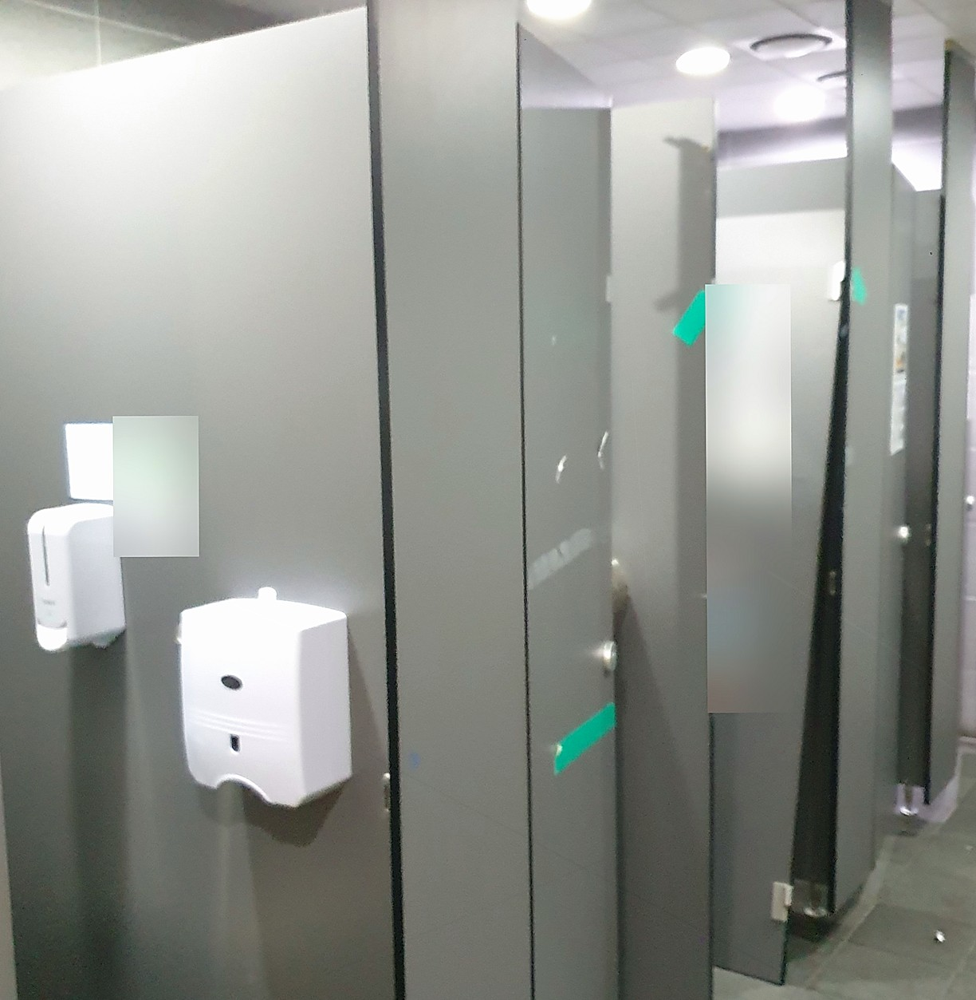
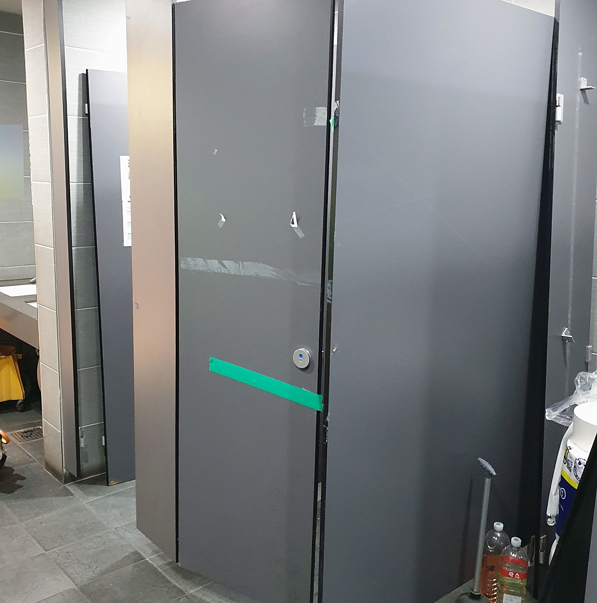
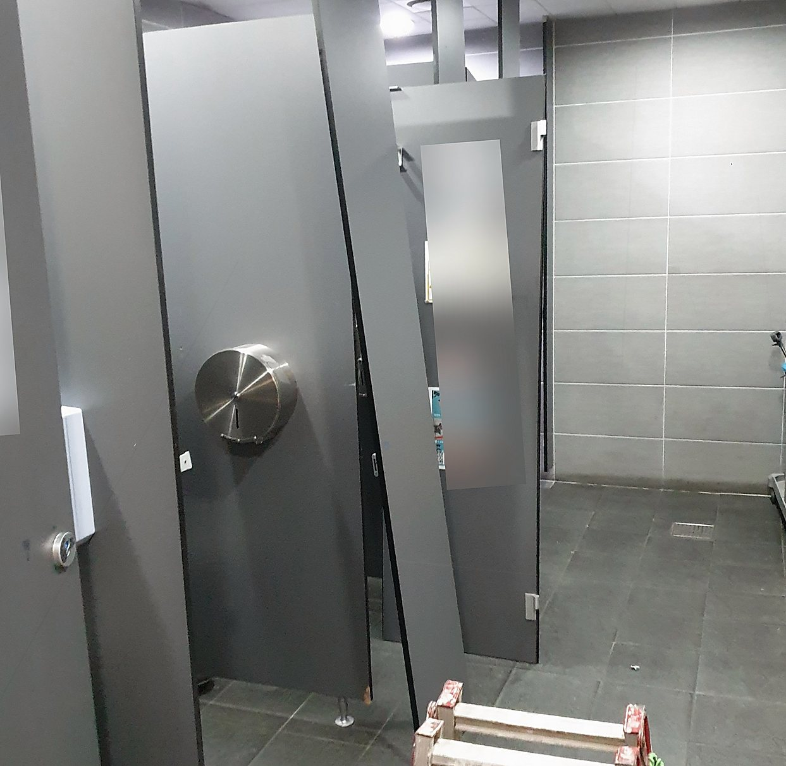
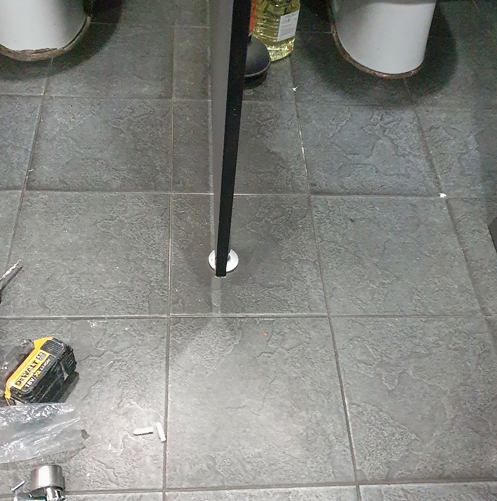
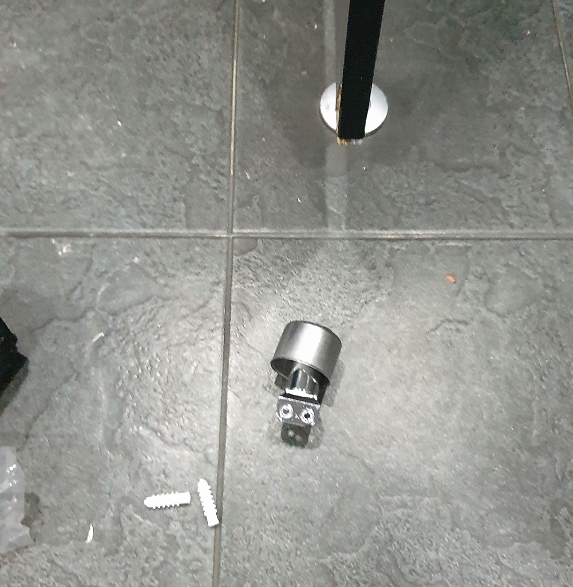
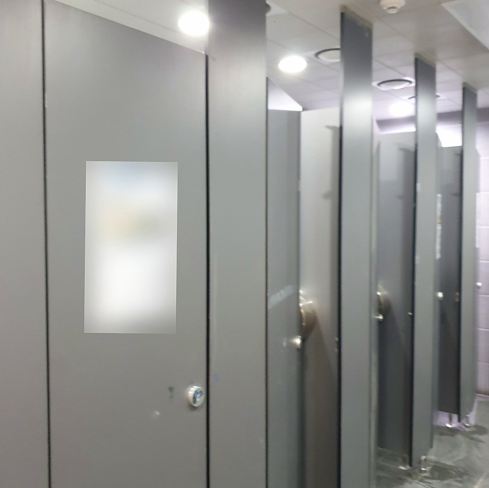
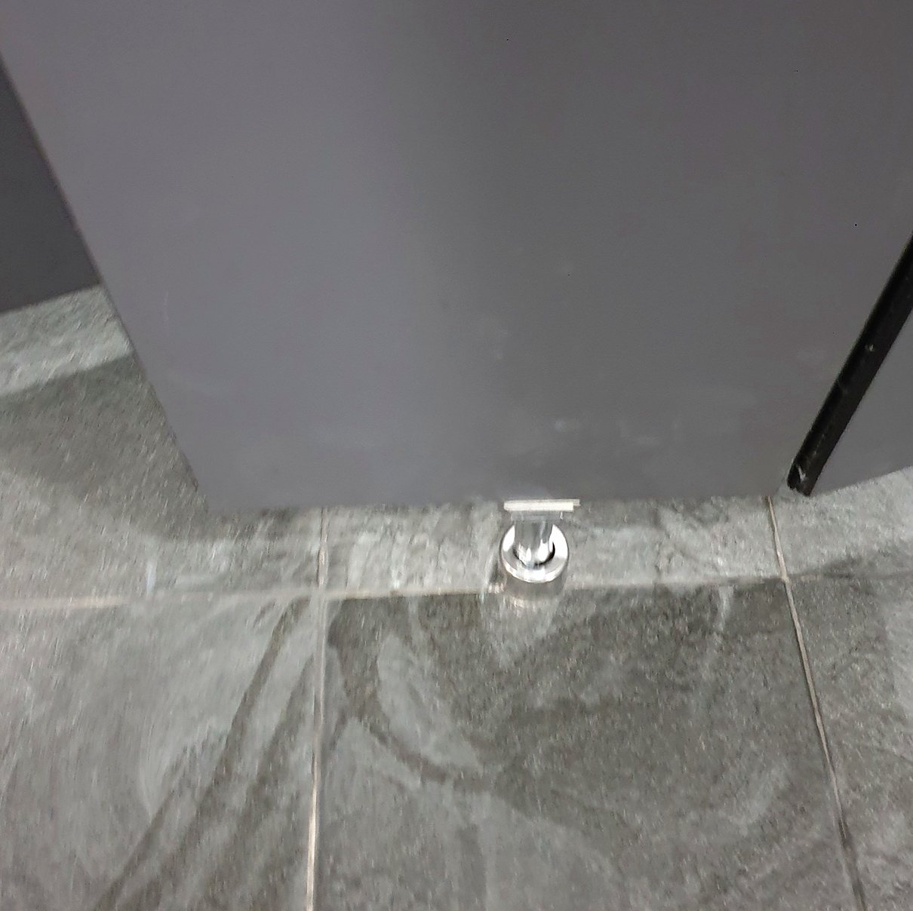
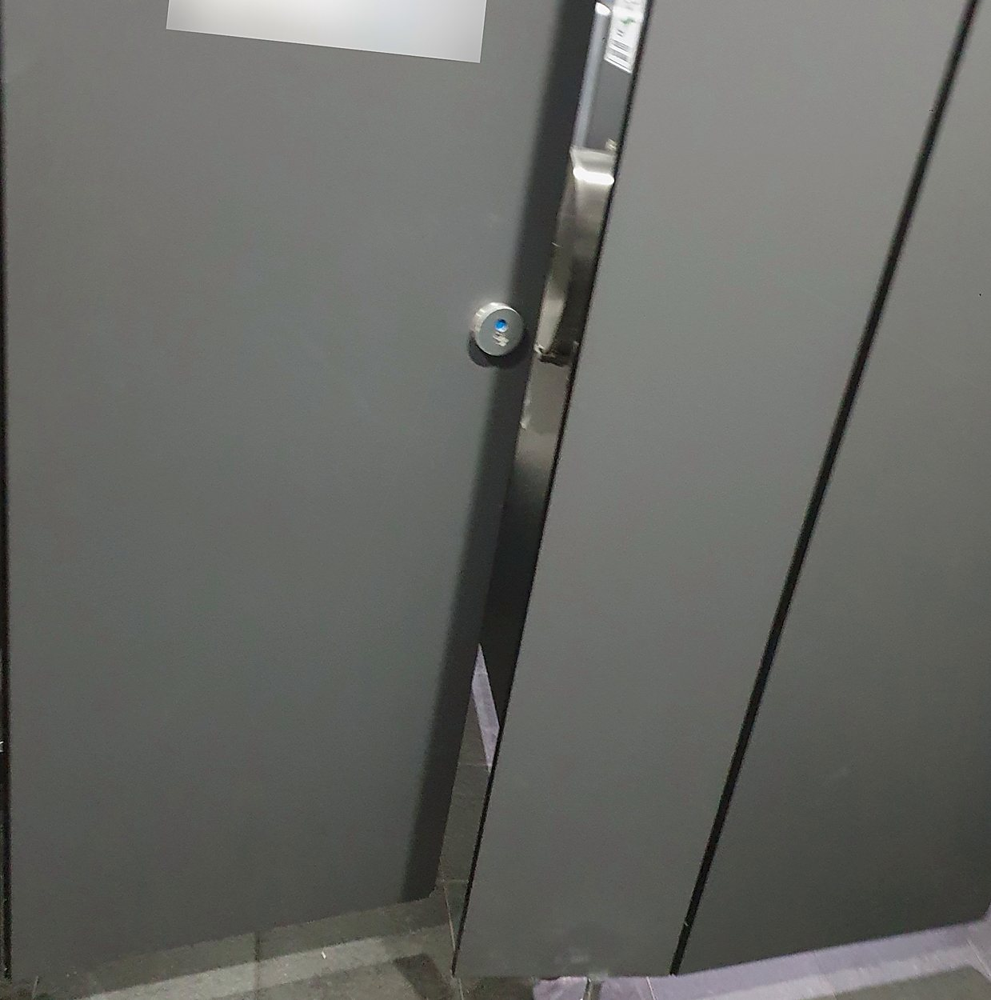
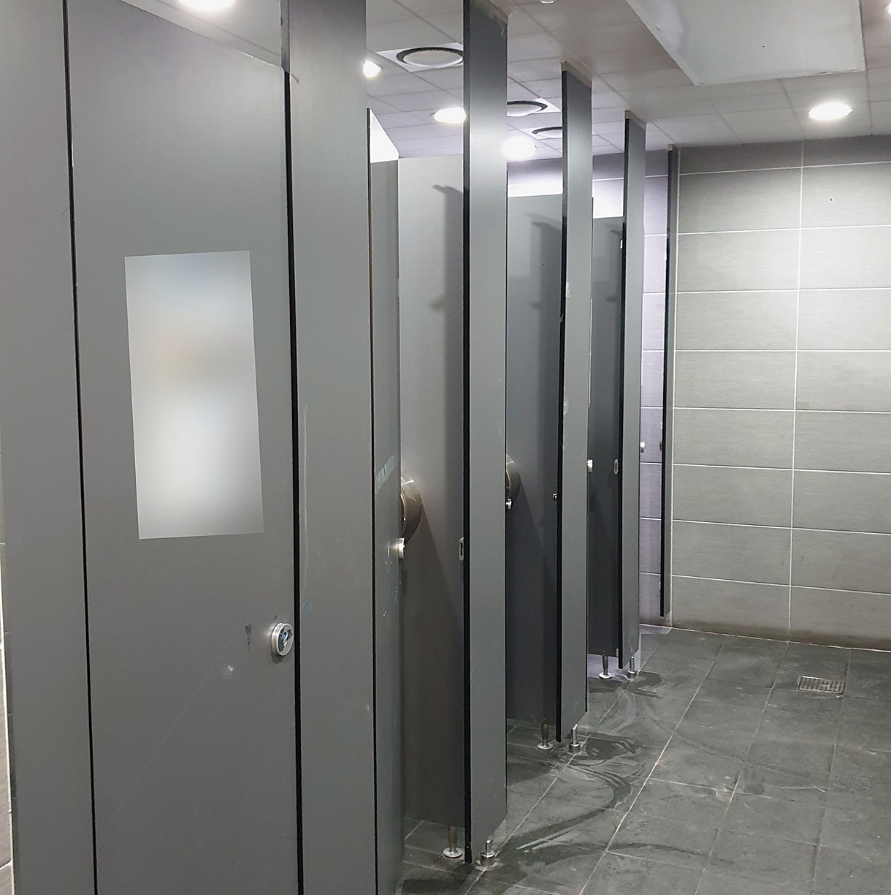

홈 › 시공 사례 › 평택 큐비클 칸막이 떨어짐 — 물류센터 공용화장실, 부서진 문짝까지 보강 부품으로 2중 보강
평택 큐비클 칸막이 떨어짐 — 물류센터 공용화장실, 부서진 문짝까지 보강 부품으로 2중 보강









화장실큐비클은 문짝만 고장 나는 게 아닙니다. 사람이 많이 드나드는 곳에서는 문과 칸막이 사이를 잇는 판까지 빠지기도 합니다. 이때 빠진 것만 제자리에 붙이면 같은 곳이 금방 또 벌어집니다. 평택 물류센터 공용화장실 현장이 그랬습니다. 문과 칸막이 사이의 판이 떨어졌고, 문짝도 거의 다 부서져 바로 고쳐야 하는 급한 상황이었습니다. 칸막이 사이에 보강 부품을 넣어 2중으로 받치게 만들었고, 1명 3시간에 끝냈습니다.
현장 상태
- 많은 직원이 함께 쓰는 공용화장실이었습니다.
- 문과 칸막이 사이의 판(칸)이 빠져 비스듬히 기울어 있었습니다.
- 문도 거의 다 부서져 테이프로 임시로 붙여 둔 칸이 있었습니다.
- 바쁜 시간대에 여러 사람이 계속 쓰다 보니 생긴 하자였습니다.
- 그 칸을 쓸 수 없어 바로 손봐야 하는 상황이었습니다.
지금 확인해 보세요
- 판과 판이 만나는 자리가 벌어져 틈이 보이는가
- 문을 닫으면 옆 판까지 같이 흔들리는가
- 문 위나 아래가 한쪽으로 기울었는가
- 테이프나 끈으로 임시로 붙여 둔 곳이 있는가
- 잠금장치가 틀에 잘 안 맞는가
하나라도 해당되면 통째로 빠지기 전에 사진을 보내 주세요. 공용화장실은 한 칸이 막히면 나머지 칸으로 사람이 몰려 다음 칸도 빨리 상합니다.
왜 2중 보강인가
큐비클칸막이는 여러 장의 판을 부속으로 이어 세우는 구조입니다. 문을 여닫을 때마다 그 힘이 옆으로 전해지고, 이음 자리가 그 힘을 다 받습니다. 쓰는 사람이 많을수록 이음 자리가 먼저 벌어집니다. 빠진 것을 원래 자리에 다시 붙이기만 하면 같은 힘이 같은 곳에 또 걸립니다. 그래서 이번에는 이음 자리 옆에 부품을 하나 더 넣었습니다. 원래 잇던 자리와 새 부품이 함께 힘을 나눠 받는 2중 구조입니다. 한 곳에 몰리던 힘이 둘로 나뉘니 훨씬 견고해집니다.
사람 많은 공용화장실에서 생기는 일
물류센터처럼 많은 인원이 바쁘게 오가는 곳은 여닫는 횟수부터 다릅니다. 급하게 밀고 당기다 보니 이음 자리에 힘이 계속 쌓입니다. 처음에는 살짝 기우는 정도지만, 그대로 두면 문이 부서지고 옆 판까지 빠집니다. 이번 현장도 그 단계까지 간 상태였습니다. 이런 곳은 원래대로 되돌리는 것보다 한 단계 더 튼튼하게 만드는 편이 낫습니다.
손님이 가장 많이 막히는 지점
빠진 판을 테이프로 붙이거나 기대어 세워 두고 버티는 경우가 많습니다. 쓰는 사람이 많아 공사 시간을 잡기도 어렵습니다. 그런데 임시로 붙인 곳은 다른 칸까지 흔들리게 만듭니다. 큐비클부속을 따로 사서 다시 붙여 보려 해도, 무거운 판을 받치면서 줄을 맞추는 일이라 혼자서는 어렵습니다.
작업 순서
- 상태 확인 — 빠진 판과 부서진 문, 흔들리는 칸을 모두 살폈습니다.
- 자리 정리 — 기울어진 것들을 내리고 붙어 있던 자리를 정리했습니다.
- 다시 세우기 — 빠진 판을 원래 자리에 바로 세웠습니다.
- 부품 추가 — 이음 자리에 부품을 더 달아 2중으로 받치게 했습니다.
- 문 걸기·정렬 — 문을 다시 달고 옆 칸과 줄을 맞췄습니다.
보강으로 되는 경우 · 판을 바꿔야 하는 경우
- 판이 빠졌지만 판 자체는 쓸 수 있다 → 다시 세우고 부품을 더하면 됩니다. 이번 현장이 여기입니다.
- 이음 자리만 헐거워졌다 → 빠지기 전에 부품만 더해도 됩니다.
- 판이 깨지거나 물을 먹어 부풀었다 → 그 판은 새로 바꿔야 합니다.
작업 결과
- 빠져 있던 판과 문이 다시 제자리에 섰습니다.
- 이음 자리에 부품을 더해 2중으로 받치게 했습니다.
- 옆 칸과 줄이 다시 맞아 칸 전체가 덜 흔들립니다.
- 바쁜 현장에서 바로 다시 쓸 수 있게 마무리했습니다.
- 평택 물류센터 화장실큐비클 현장, 1명 3시간 작업이었습니다.
자주 묻는 질문
A. 판이 깨지거나 부풀지 않았으면 다시 세우고 보강하면 됩니다. 이번 현장도 판은 그대로 쓰고 부품을 더했습니다.
A. 원래 잇던 자리에 부품을 하나 더 넣어, 두 곳이 함께 힘을 받게 하는 방식입니다. 한 곳에 몰리던 힘이 나뉘어 더 튼튼합니다.
A. 모두 같은 것입니다. 업계에서는 큐비클이라 부르고, 보통은 화장실칸막이나 화장실파티션이라고 합니다.
A. 됩니다. 이번 현장이 물류센터 공용화장실이었습니다. 사람이 많은 곳일수록 보강까지 같이 하는 편이 좋습니다.
A. 일정에 따라 다릅니다. 사진과 함께 전화 주시면 가장 빠른 날을 알려 드립니다.
A. 이번 현장은 판과 문 복구, 보강까지 1명이 3시간에 끝냈습니다. 칸 수와 상태에 따라 달라집니다.
세 줄 요약
증상 · 물류센터 공용화장실 큐비클에서 문과 칸막이 사이의 판까지 빠지고 문짝도 거의 다 파손
원인 · 바쁜 시간대에 여러 사람이 계속 쓰다 보니 이음 자리에 힘이 몰림
조치 · 판 다시 세우기 → 칸막이 사이 부품 추가(2중 보강) → 문 걸기·정렬